¿Qué es?
Un seguidor solar es un dispositivo que orienta paneles solares hacia el sol a medida que este se mueve a lo largo del día. Su objetivo es maximizar la captación de luz solar, aumentando así la eficiencia de la generación de energía.

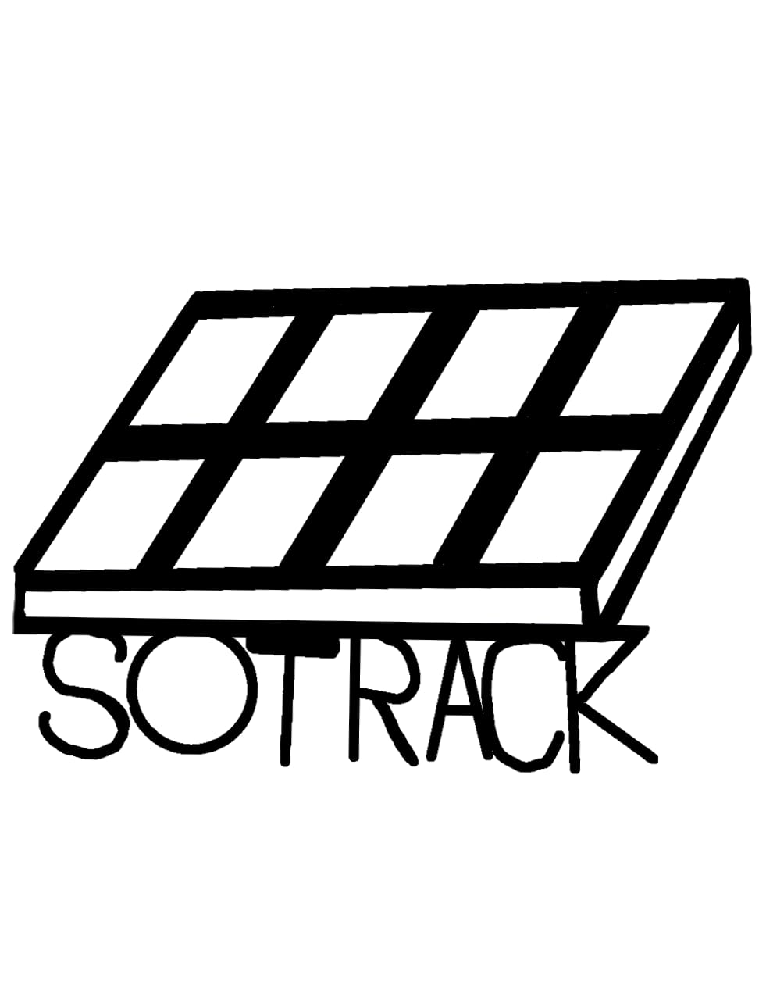

Un seguidor solar es un dispositivo que orienta paneles solares hacia el sol a medida que este se mueve a lo largo del día. Su objetivo es maximizar la captación de luz solar, aumentando así la eficiencia de la generación de energía.
Este panel está diseñado para maximizar la recolección de energía, permitiendo acumular energía en una batería para su uso como energía de emergencia o como fuente alternativa, conectando el panel solar directamente a la casa para ahorrar en costos energéticos.
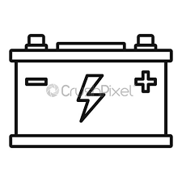
Este proyecto está centrado en ser una fuente de energía de emergencia o alternativa, ideal para ahorrar en costos de energía y a largo plazo poder ahorrar dinero en costos de energía eléctrica en caso de que se use como una fuente principal de energía.
Mayor eficiencia: Al seguir la trayectoria del sol, los seguidores solares pueden aumentar la captación de luz, lo que se traduce en una mayor producción de energía en comparación con paneles fijos.
Optimización del espacio: Permiten aprovechar mejor el área disponible, ya que generan más energía en menos espacio.
Reducción de costos a largo plazo: Aunque la inversión inicial puede ser mayor, el aumento en la producción de energía puede compensar rápidamente los costos.
Flexibilidad en el diseño: Se pueden adaptar a diferentes tipos de instalaciones y terrenos.
Menor necesidad de mantenimiento: Muchos sistemas de seguimiento son automáticos y requieren poco mantenimiento.
Aprovechamiento de energía: Pueden ajustarse para maximizar la captación incluso en días nublados.
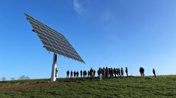
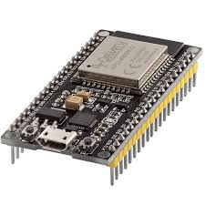
ESP32: Es un módulo que tiene WIFI + BT + BLE para aplicaciones con sensores de baja potencia.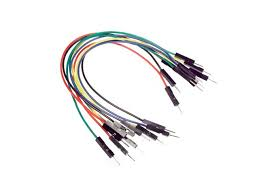
Cables: Sirven para conectar el circuito.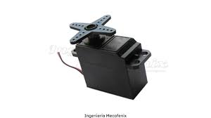
Servomotor SG5010: Permite mover el panel solar con precisión.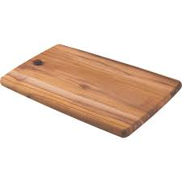
Tabla: Base estructural del proyecto.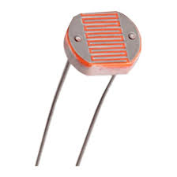
Fotorresistor: Detecta la intensidad de la luz.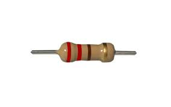
Resistencia: Controla el flujo de corriente eléctrica. Panel solar pequeño:
Convierte la luz solar en energía eléctrica.
Panel solar pequeño:
Convierte la luz solar en energía eléctrica.
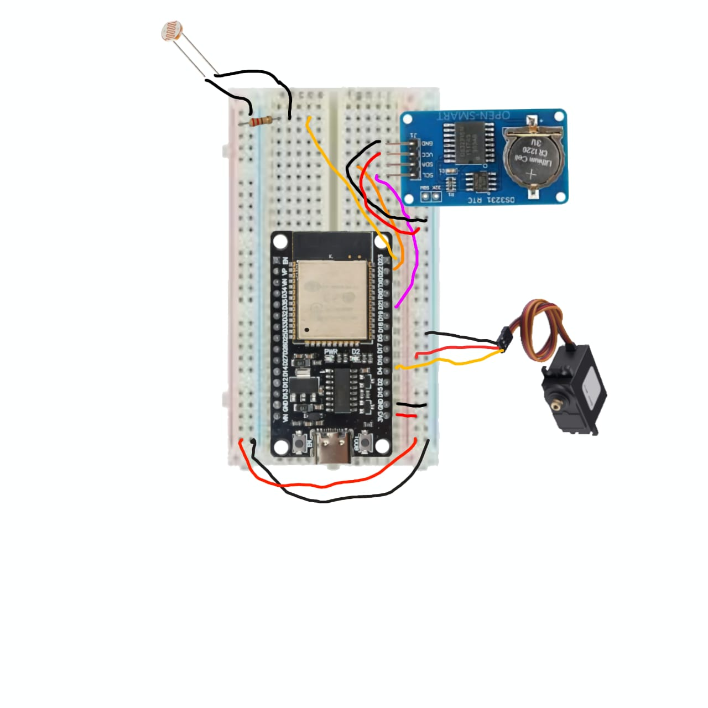
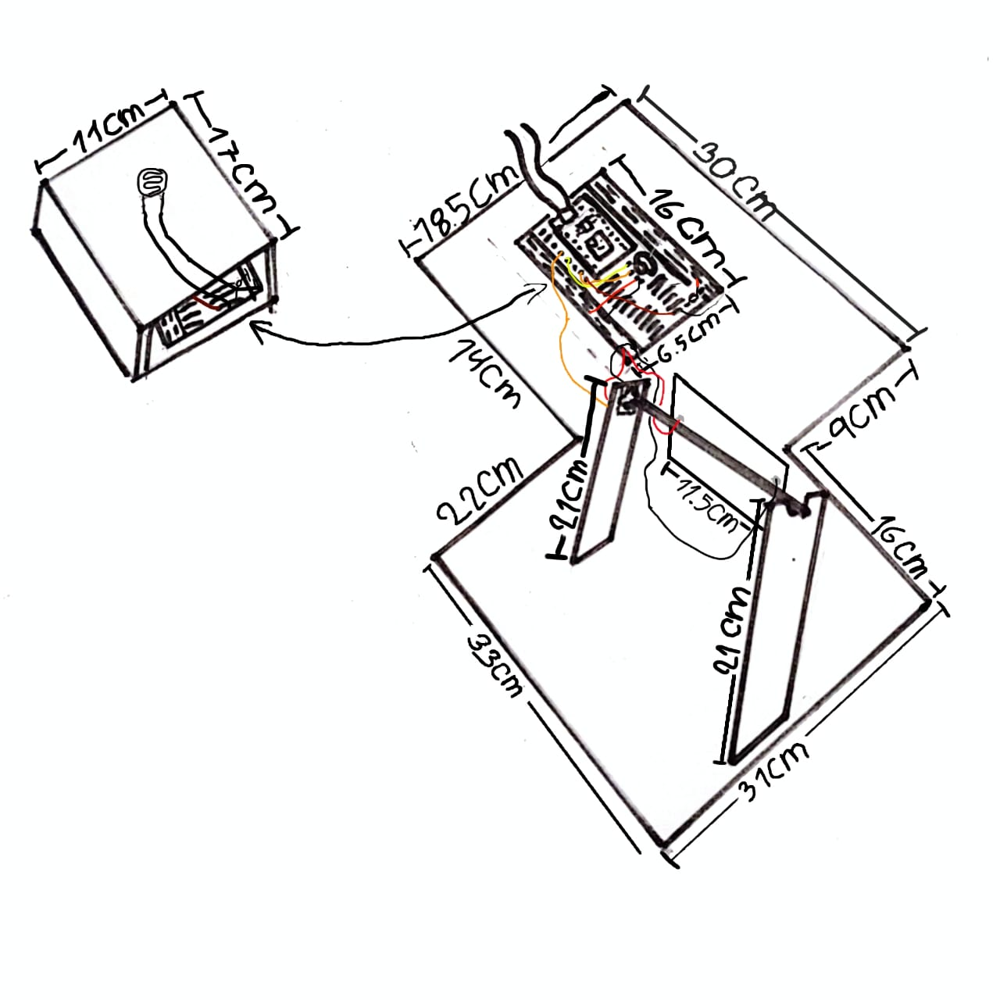
Correos:
demartinezp@cnb.edu.co
jhmartinezp@cnb.edu.co
Nombres:
Deyver Alexander Martínez Peralta
Jhorman Estiven Martínez Peralta